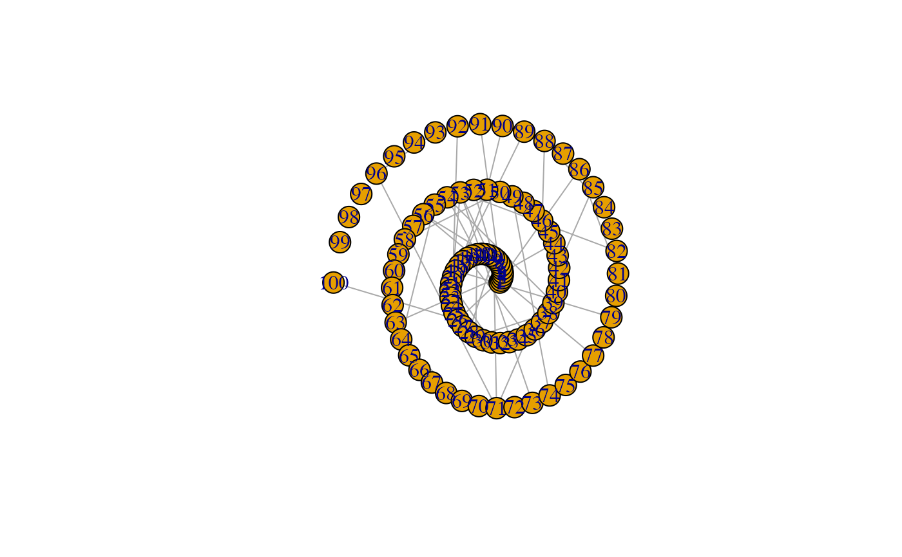
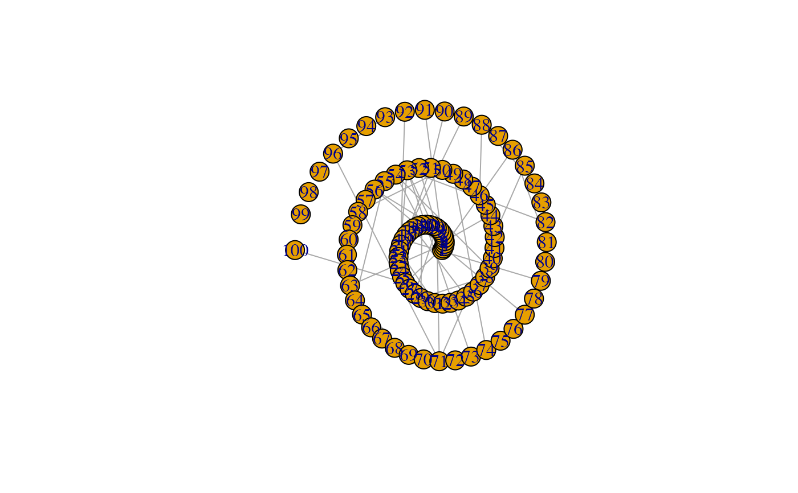

Layout a graph on a spiral
layout_as_spiral(
g,
type = c("Archimedean", "Bernoulli", "Fermat", "Euler"),
arcs = 6,
a = 1,
b = NULL,
rev = FALSE
)Arguments
- g
An igraph object. If (
rev = FALSE) the vertex with the lowest index will be placed in the centre of the spiral, the highest index will be most outer vertex,- type
Spiral type, one of
"Archimedean","Bernoulli","Fermat", or,"Euler"(default ="Archimedean")- arcs
The number of arcs (half circles/ovals) that make up the spiral (default =
10)- a
Parameter controlling the distance between spiral arms, however, the effect will vary for different spiral types (default =
0.5)- b
Parameter controlling where the spiral originates. A value of 1 will generally place the origin in the center. The default
NULLwill choose a value based on the different spiral types (default =NULL)- rev
If
TRUEthe vertex with the highest index will be placed in the centre of the spiral (default =FALSE)
Value
An igraph layout
Examples
library(igraph)
#>
#> Attaching package: ‘igraph’
#> The following objects are masked from ‘package:stats’:
#>
#> decompose, spectrum
#> The following object is masked from ‘package:base’:
#>
#> union
g <- igraph::sample_gnp(100, 1/100)
# Equiangular spiral: Any line from the origin cuts at the same angle.
plot(g, layout = layout_as_spiral(g, type = "Bernoulli", arcs = 5))
 # The arms of Fermat's spiral diverge quadratically.
plot(g, layout = layout_as_spiral(g, type = "Fermat", arcs = 5))
# The arms of Fermat's spiral diverge quadratically.
plot(g, layout = layout_as_spiral(g, type = "Fermat", arcs = 5))
 # Equidistance of intersection points along a line through the origin.
plot(g, layout = layout_as_spiral(g, type = "Archimedean", arcs = 5))

# Equidistance of intersection points along a line through the origin.
plot(g, layout = layout_as_spiral(g, type = "Archimedean", arcs = 5))
